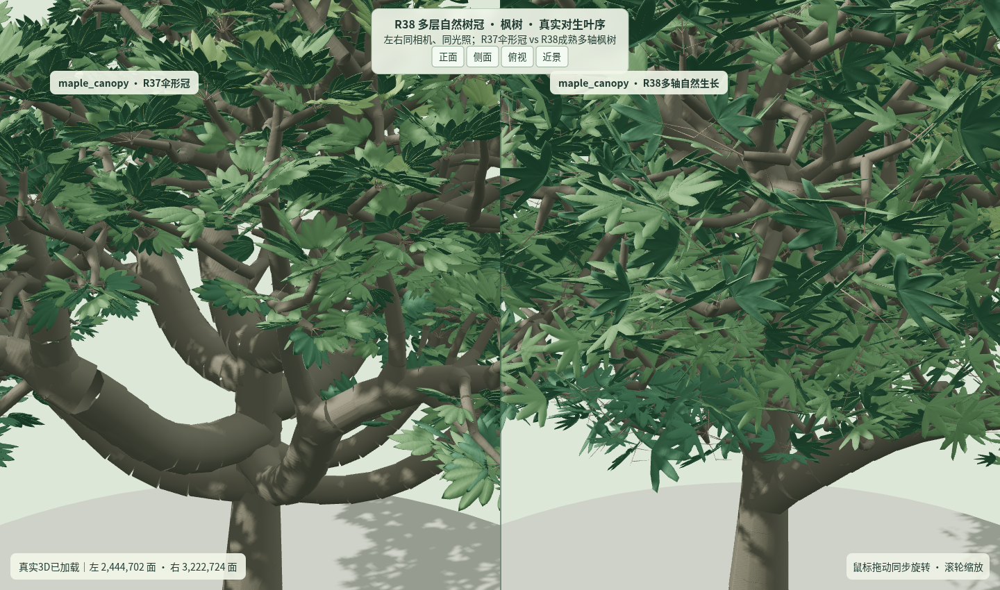
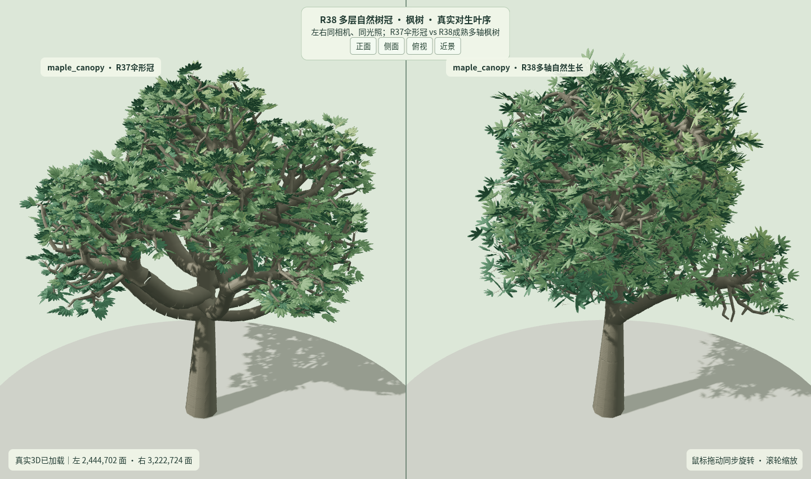
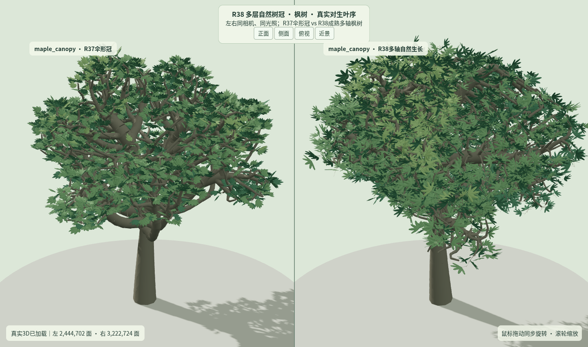

R38 v3 · 真实三维 A/B
统一机位、光照、地面和材质显示。R37 为 2,444,702 面；R38 为 3,222,724 面。对照重点是自然形态而非三角面数量。



仍然没有达到最终自然标准。
目前侧枝、叶片位置比 R37 合理，但树冠部分区域仍显得规则，树皮和自然光照表现也较粗糙。此版本是隔离的高清原型，不会覆盖正式森林。没有经过 RTX 5070 Ti 实际游戏帧率测试。
左边 R37，右边 R38。针对用户指出的“不自然”，这次改了主干延续、多层不规则侧枝、冠形空隙、枫树对生叶序，以及连续的五裂枫叶表面。下方是实际 Chrome / WebGL 三维截图，不是生成式概念图。

统一机位、光照、地面和材质显示。R37 为 2,444,702 面；R38 为 3,222,724 面。对照重点是自然形态而非三角面数量。
目前侧枝、叶片位置比 R37 合理，但树冠部分区域仍显得规则，树皮和自然光照表现也较粗糙。此版本是隔离的高清原型，不会覆盖正式森林。没有经过 RTX 5070 Ti 实际游戏帧率测试。